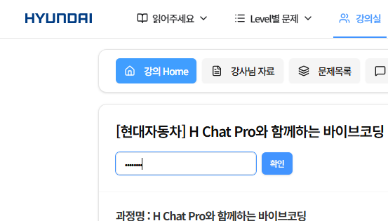
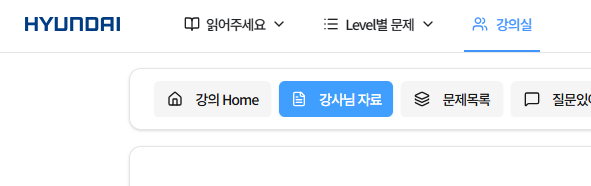
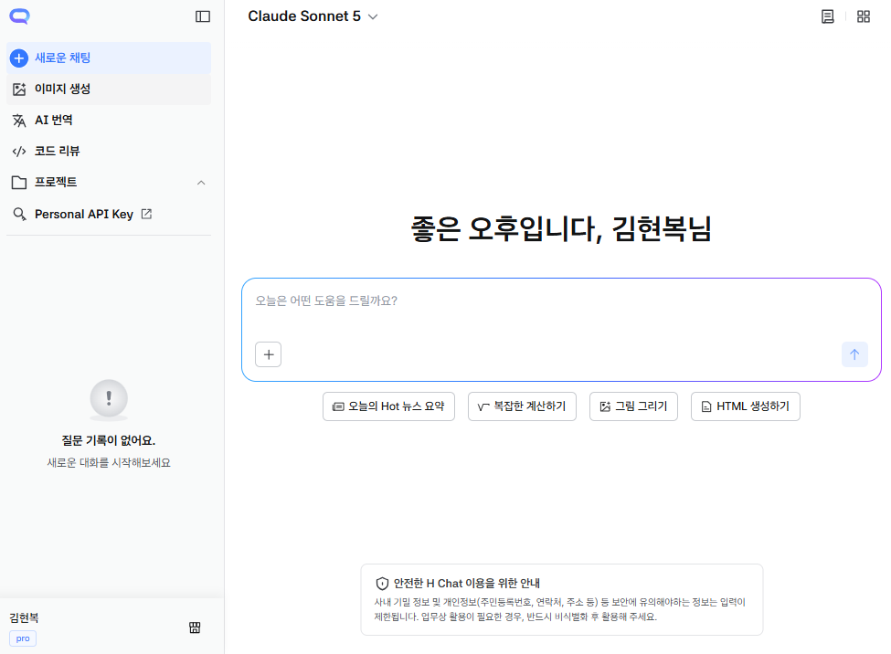
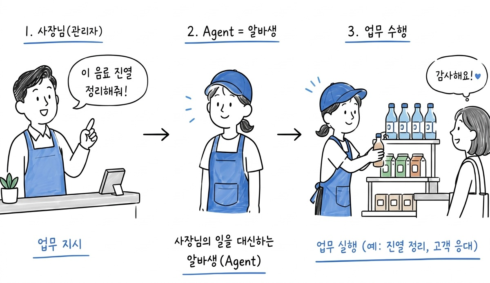
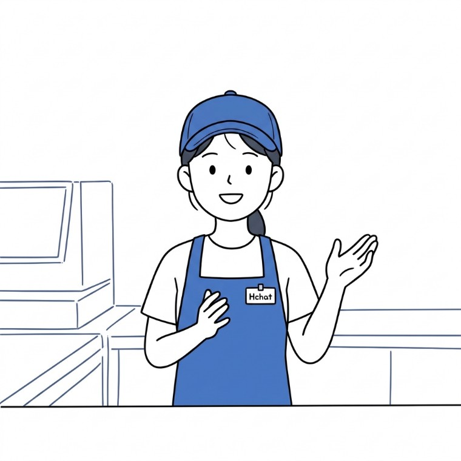
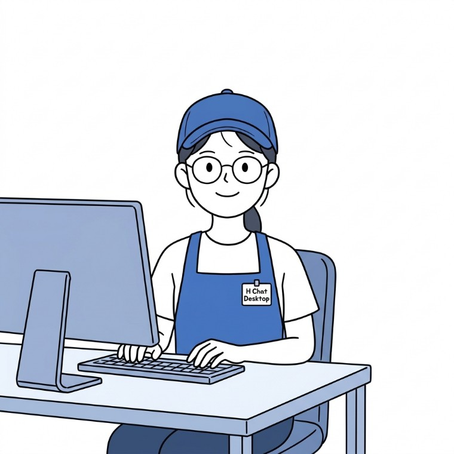
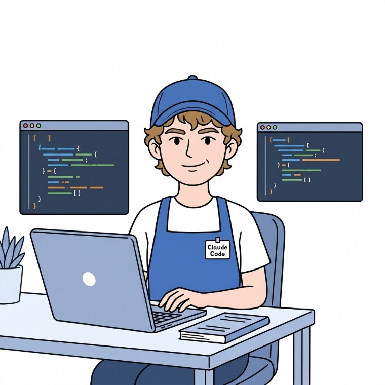

Orientation.
사전 준비사항 점검 및 과정 안내
CHAPTER 1
과정 안내
오늘 하루가 어떻게 흘러가는지, 누구와 함께하는지 먼저 맞춥니다.
- 강의 주제
- 오늘의 흐름
- 학습 페어제
강의 주제
AI 시대에는 업무 생산성 향상과 더불어 문제점이 동반되고 있습니다.
이 변화 속에서 어떻게 대응해야 하는지 방향성을 제시하고,
업무 생산성을 높일 수 있는 업무 효율화 프로젝트를 진행합니다.
업무 효율화 (나만의 AI 업무도구 제작) 프로젝트
Agent와 모델
Pro · 데스크탑
Claude Code
아이디어 기획서
오늘의 흐름
대화형 AI에서 시작해 나만의 업무 개선 아이디어 기획서까지 하루에 이어집니다.
| 모듈 | 내용 |
|---|---|
| M1 | H Chat으로 시작하는 AI 업무 활용 |
| M2 | H Chat 데스크탑으로 내 PC 다루기 |
| M3 | Claude Code로 익히는 바이브코딩 |
| M4 | 데이터 시각화·AI 업무도구 만들기 |
| M5 | 나만의 업무 혁신 아이디어 기획서 |
| – | 핵심 복습 · 만족도 조사 |
학습 페어제
1 Day로 모든 내용을 학습하고,
프로젝트까지 진행해야 합니다.
짝꿍이 서로 도움을 주고 받을 수 있도록 학습 페어 제도를 운영합니다.
학습 페어제
- 이론 퀴즈에서 서로 정답을 공유해도 됩니다. (이론 퀴즈를 볼 때는 AI 사용을 금지합니다.)
- 실시간으로 서로 도움을 주고 받아주세요.
- 프로젝트 할 때, 필요시 도움을 받으면서 진행해주세요.
CHAPTER 2
실습 환경 준비
교육 플랫폼에 로그인하고, 교재와 H Chat 까지 열어 둡니다.
- 로그인
- 교재 다운로드
- H Chat 접속
로그인 안내
hyundai.mincoding.co.kr 에 접속해주세요.
강사님 안내에 따라, 본인의 계정으로 로그인 해주세요.
- 아이디 : hyundai_edu_001 ~ hyundai_edu_070
- 비밀번호 : hyundai1
로그인 이후 강의실 > 강의장 선택 > 비밀번호 입력
- 강의장 비밀번호 : 485485
① 교육 플랫폼 접속 · 로그인

② 강의실 > 강의장 비밀번호 입력
교재 다운로드 안내
강사님 자료 메뉴를 클릭하면,
교재가 업로드 되어있습니다.
이곳에서 교재를 다운로드 받으면 됩니다.

실습준비 (H Chat)
실습 시작 전 최종 체크
아래 3가지가 모두 준비되면 M1을 시작합니다.
하나라도 막히면 조교에게 바로 알려주세요.
- 교육 플랫폼 로그인 — hyundai.mincoding.co.kr 접속 · 강의장 수강신청 완료
- 교재 다운로드 — 강의실 > 강사님 자료에서 교재 내려받기 완료
- H Chat 접속 — h-chat-pro.autoever.com 접속 확인
CHAPTER 3
오늘의 주제 — Agent와 함께 일하기
Agent를 알바생에 빗대어 이해하고, 오늘 무엇을 만들지 미리 봅니다.
- Agent = 알바생
- 사람의 검증
- 결과물 미리보기
오늘 수업 주제
Agent와 함께 협업하며 일하는 방법을 익힙니다.

Agent = 알바생
이제부터 Agent를 아르바이트생으로 비유하겠습니다.

왜 Agent를 ‘비서’라고 하지 않고 ‘알바생’으로 비유하나요?
Agent가 만든 산출물을 그대로 믿으면 안 되기 때문입니다.
오늘 만나는 알바생 세 명
Agent는 나 대신 일해 주는 알바생 한 명입니다. 오늘은 알바생 세 명을 차례로 만납니다.
Agent

말로 알려주는 알바생
묻는 말에 답하고 글로 정리해 줍니다
다만 내 파일에는 손대지 못합니다
Agent

일까지 해 주는 알바생
내 컴퓨터의 폴더와 파일을 직접 열고
정리하고 새 문서로 만들어 줍니다
Agent

엔트로픽이 만든 똑똑한 알바생
더 많은 기능이 있는 똑똑한 Agent 입니다
여러 파일을 읽고 순서까지 스스로 짭니다
오늘 이런 것들을 만듭니다
결과물 미리보기Agent(알바생)과 대화만으로 아래와 같은 결과물을 만들 수 있습니다!!

M1 · 말로 만든 웹페이지

M2 · 규칙대로 합친 통합표

M3 · 회의록 PDF

M4 · 대시보드 · 보고서
실리콘밸리는 이미 이렇게 일합니다
시작하기 전에, AI 에이전트를 실제로 쓰는 모습을 먼저 봅니다.
감사합니다.
이어서 M1. H Chat으로 시작하는 AI 업무 활용